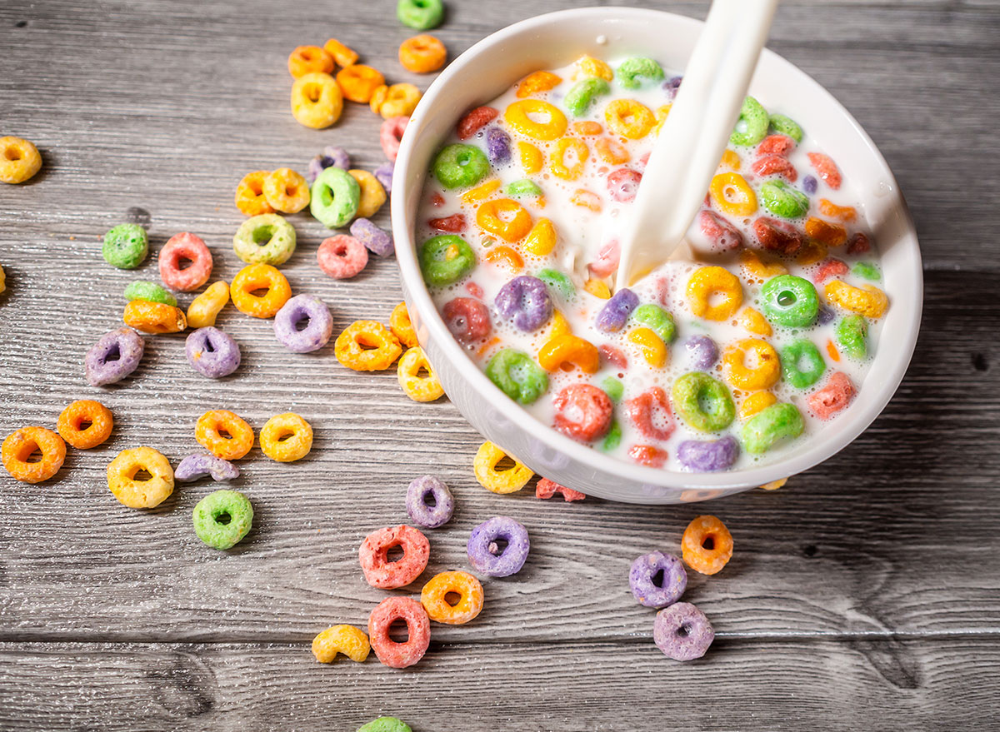

Milk and Cereal for a king

This recipe is perfect for those who can't cook, don't have time, lazy, broke, or all of the above.
Have you ever burn yourself with 3rd degree burns by pouring cold water? I have, my doctor said it
was impossible but I proved that s.o.b wrong. That was the day I learned I couldn't cook. Don't fret friends I gotchu
with this fast, easy, and simple solution
Ingredients
- Milk, you can buy this at the grocery store or use water/soda nothing wrong with that
- cereal, choose whatever cartoon/art cover on the cereal box that looks appetizing to you
Step by Step
- Grab a bowl and pour the cereal first, (there is a decade debate on what to pour first, its cereal...)
- Now grab your liquid of choice and pour it right on top of your cereal
- repeat step 1 and 2 if you're still hungry
- ????
Other recipes